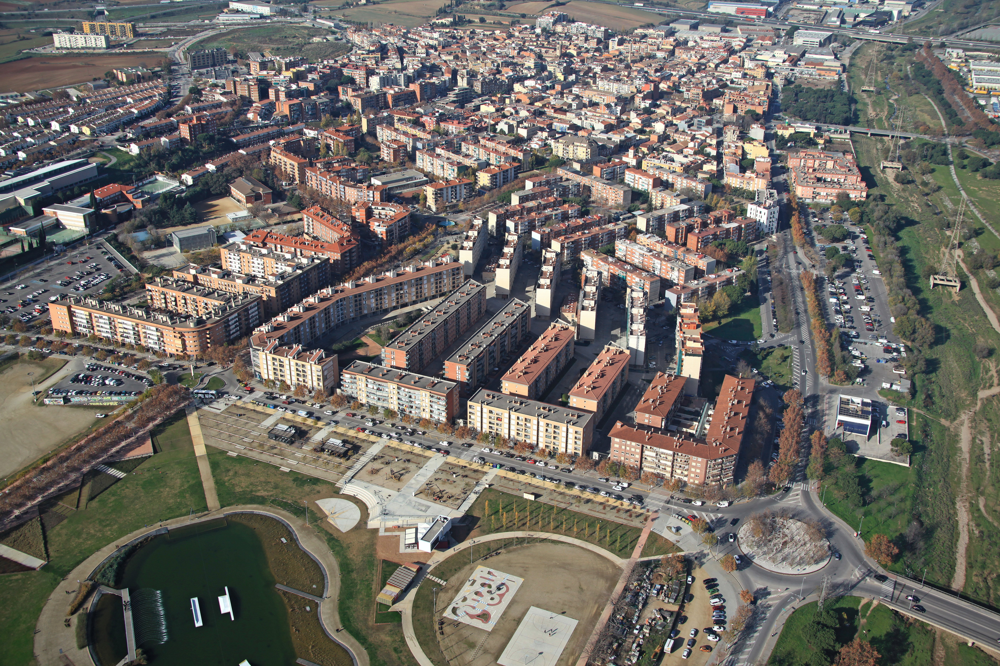

Demografia
Estructura i evolució de la població.

Mercat laboral
Evolució de l'atur i la contractació.

Activitat empresarial
Teixit empresarial i creació d'empreses.

Educació
Centres educatius, alumnes matriculats, mobilitat i avaluació.

Mobilitat
Parc de vehicles i serveis relacionats.

Habitatge
Parc d'habitatges, mercat immobiliari i construcció.

Economia
Context macroeconòmic, renda, distribució i desigualtat.

Consum
Consum d'aigua, energia i altres recursos.
Sobre l'Observatori
L'Observatori de Ciutat és una eina de consulta i anàlisi que posa a disposició de la ciutadania, el teixit econòmic i els agents del territori informació actualitzada sobre la realitat social i econòmica del municipi.
Aquest espai, impulsat pel Servei de Govern Obert, Transparència i Atenció Ciutadana, té com a finalitat facilitar l'accés a dades rellevants, fomentar la transparència i contribuir a una millor comprensió de l'evolució del municipi.
L'Observatori s'estructura en vuit àmbits temàtics: demografia, mercat laboral, activitat empresarial, mobilitat, habitatge i educació, economia i consum, que es despleguen mitjançant panells interactius de visualització de dades. Progressivament, es preveu la incorporació de nous àmbits i indicadors.
La informació que s'hi presenta prové de fonts oficials i de fonts municipals, i s'actualitza periòdicament per garantir-ne la qualitat i la vigència.
També et pot interessar
Contacte
Per a més informació, podeu adreçar la vostra consulta a: